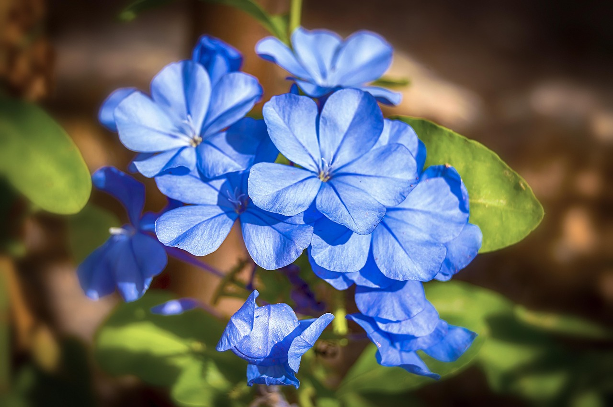
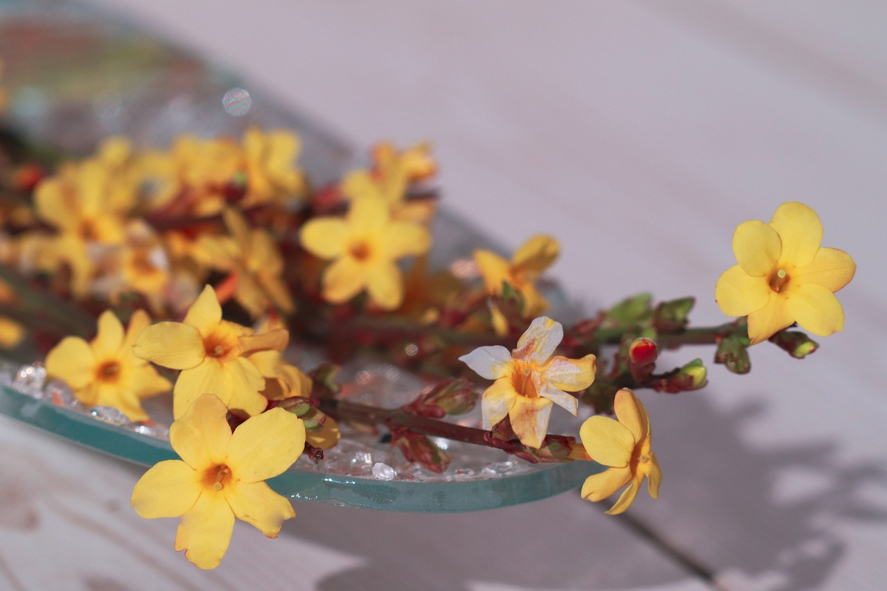

🌿 茉莉 天下第一香
Jasminum sambac - 纯洁与优美的象征



📋 基本信息
学名：
Jasminum sambac
科属：
木樨科素馨属
原产地：
印度、阿拉伯地区
花期：
5-10月（盛花期6-8月）
花语：
纯洁、优美、友谊、忠贞
株高：
1-3米（可攀援）
🎨 主要品种
单瓣茉莉
香气浓郁
代表：普通茉莉重瓣茉莉
花型饱满
代表：虎头茉莉黄茉莉
花色金黄
代表：金茉莉紫茉莉
花色独特
代表：紫花茉莉🌱 养护要点
☀️ 光照：
喜阳光充足，每天6-8小时
💧 浇水：
保持土壤湿润，忌积水
🌿 土壤：
疏松肥沃的微酸性土壤
🌡️ 温度：
适宜25-35°C，不耐寒
🍃 施肥：
生长期每10天施一次液肥
✂️ 修剪：
花后及时修剪，促进分枝
💡 专业养护技巧
• 夏季花期需充足水分，早晚浇水
• 冬季需室内养护，保持温度10°C以上
• 春季换盆时施足基肥
• 适当修剪可使株型更美观
🌿 茉莉特色养护
• 茉莉喜肥，特别是磷钾肥可促花
• "晒不死的茉莉"，夏季不怕晒
• 花期前控水可促进花芽分化
• 夜间浇水有助于花香释放
🍂 季节养护指南
🌸 春季（3-5月）
• 换盆修剪
• 施催芽肥
• 增加光照
• 适度浇水
☀️ 夏季（6-8月）
• 花期管理
• 充足浇水
• 施磷钾肥
• 花后修剪
🍁 秋季（9-11月）
• 减少施肥
• 控制浇水
• 准备越冬
• 防治虫害
❄️ 冬季（12-2月）
• 室内养护
• 保温防寒
• 控制浇水
• 停止施肥
🐛 常见病虫害防治
白粉病：
叶片有白粉，喷洒硫磺粉
炭疽病：
叶片有黑斑，剪除病叶
红蜘蛛：
叶片有黄斑，增加湿度
蚜虫：
危害嫩芽，喷洒吡虫啉
🌿 繁殖方法
扦插繁殖：
主要繁殖方式，春夏扦插
压条繁殖：
将枝条压入土中生根
分株繁殖：
多年生植株可分株
播种繁殖：
用于新品种培育
📚 文化意义
茉莉以其清香四溢而闻名，被誉为"天下第一香"，在中国文化中有着特殊的地位：
香花之首：
被誉为"天下第一香"
纯洁象征：
白色茉莉象征纯洁的爱情
友谊之花：
赠送茉莉表达真挚友谊
吉祥寓意：
茉莉谐音"莫离"，寓意不离不弃
🎵 茉莉与文化
• 民歌《茉莉花》传唱世界各地
• 茉莉花茶是中国传统名茶
• 茉莉花是福州市的市花
• 在婚礼中象征纯洁的爱情
🌿 实用价值
花茶制作：
茉莉花茶香气馥郁
香料提取：
提取茉莉精油用于香水
药用价值：
花蕾可入药，清热解毒
观赏价值：
花香怡人，观赏性强
🍵 茉莉花茶知识
制作工艺：
茶坯+茉莉鲜花窨制
著名品种：
福州茉莉花茶最负盛名
冲泡方法：
水温80-90°C，快速出汤
保健功效：
提神醒脑，美容养颜
🌺 茉莉花茶等级
• 特级：香气浓郁持久，茶汤清澈
• 一级：香气纯正，滋味醇和
• 二级：香气明显，滋味尚可
• 三级：香气较淡，滋味一般
🌸 香气特点
香气类型：
清甜馥郁，优雅持久
释放时间：
傍晚至夜间最浓郁
温度影响：
温度越高香气越浓
湿度影响：
适度湿润增强香气
🏡 栽培养护技巧
盆栽选择：
透气性好的陶盆或紫砂盆
土壤配方：
腐叶土+园土+河沙=5:3:2
施肥要点：
薄肥勤施，花前增施磷钾肥
修剪时机：
春季和花后修剪最佳
⚠️ 注意事项
越冬保护：
冬季需室内养护，防冻害
浇水禁忌：
忌中午浇水，易伤根
通风要求：
保持良好通风，防病害
香味过敏：
浓郁花香可能引起过敏